As many as you like In the Playtest
Each widget has its own background, tiles and display mode.
Tray → "Add widget"
A desktop launcher with any video or image as its background.
Put the apps and sites you use most on tiles and open them in one click. Volume, the song that's playing and your OBS controls can be tiles too.
For Windows, on Steam. Release date to be announced.
30-second demo
"→" shows where to find each feature. The label beside each feature shows whether it is in the current Playtest. App names, icons, song titles and device names in the screenshots are made up for the photos.
A small window that sits on your desktop.
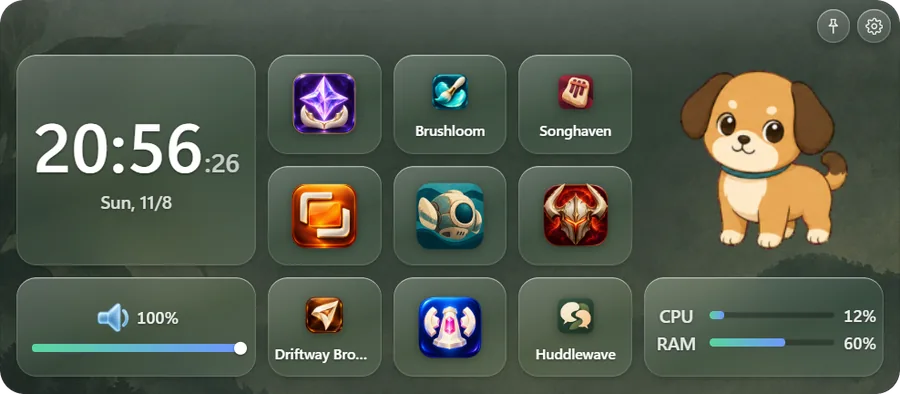
Each widget has its own background, tiles and display mode.
Tray → "Add widget"
Add and rearrange tiles; move and resize the widget.
Right-click → "Edit mode"
Stays in front. Turn it off with the pin at the top right.
Unplug a monitor and plug it back in; widgets return to their spot.
Choose when a widget is shown.
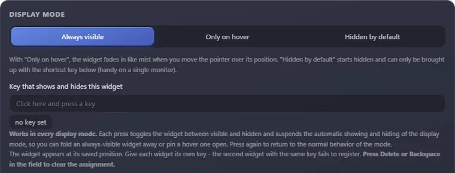
Always visible / Only on hover / Hidden by default. Video stops while a widget is hidden.
Settings → "Display mode"
Each press shows or hides the widget.
Set how fast it appears, and whether it stays faintly visible while hidden.
Change the frosted glass per widget. These are the four presets.
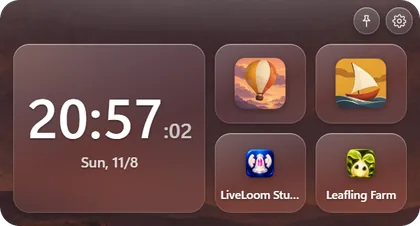
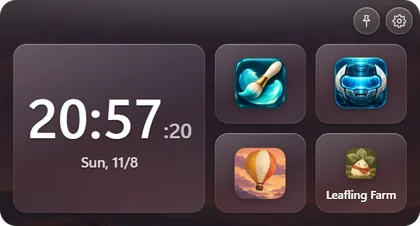
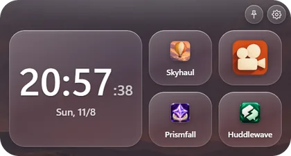
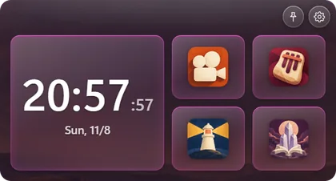
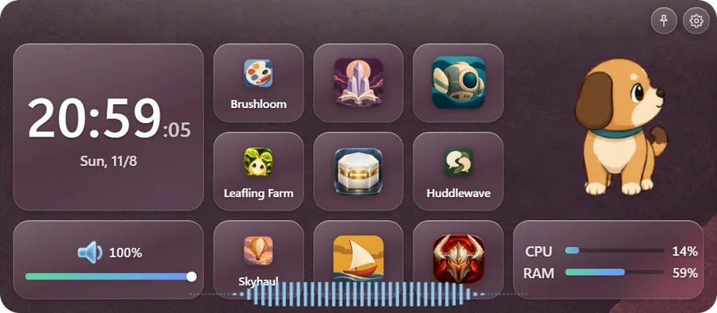
Adjust blur, tint, corner radius, edge glow and accent color.
Settings → "Display mode" → "Glass look"
Draws a waveform along the widget's edge, following the sound that's playing. You can change its color, height and placement.
Settings → "Display mode" → "Glass look"
Save a look you like under a name and use it on any widget.
Over 240 icons, emoji, or your own images.
Give any tile its own background color and opacity.
Use a video or image as a widget's background.
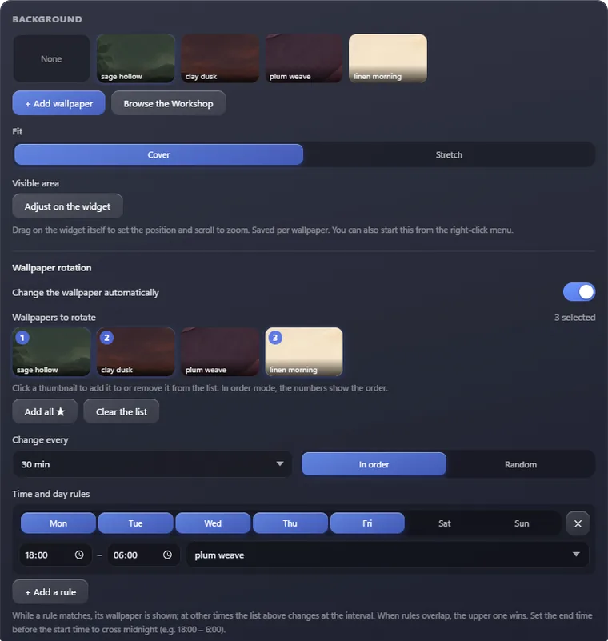
Loops mp4, webm, mov and more. Images work too.
Settings → "Background" → "+ Add wallpaper"
Drag on the widget to move the picture, scroll to zoom.
Right-click → "Adjust background position..."
Swap backgrounds by time of day, day of the week, or at a set interval, in order or shuffled.
Settings → "Background" → "Wallpaper rotation"
Choose what a tile does from 12 kinds.
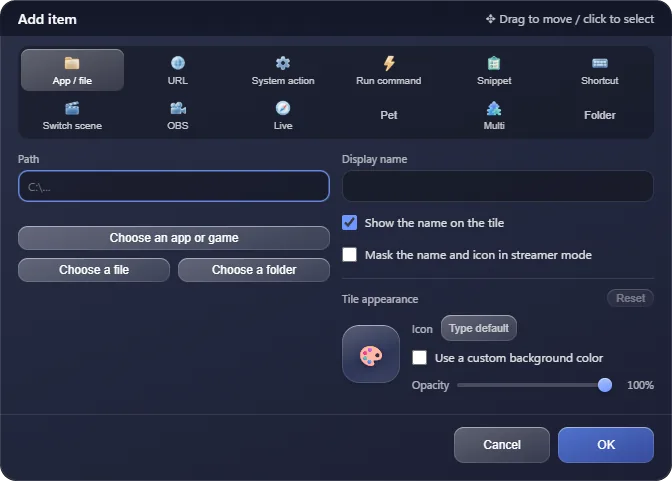
| App / file In the Playtest | Open an app, game or folder. If it's already running, minimize / restore it |
|---|---|
| URL In the Playtest | Open a website |
| System action In the Playtest | Mute, volume, play and skip tracks |
| Run command In the Playtest | Run a command |
| Snippet Not in the Playtest | Paste or type text into the app you're using |
| Shortcut In the Playtest | Send a key combination |
| Switch scene In the Playtest | Switch to a scene |
| OBS In the Playtest | Control OBS |
| Live In the Playtest | Place a live tile |
| Pet In the Playtest | Place a pet |
| Multi In the Playtest | Run several actions in order |
| Folder Not in the Playtest | Keep more tiles inside. Press to open the panel. |
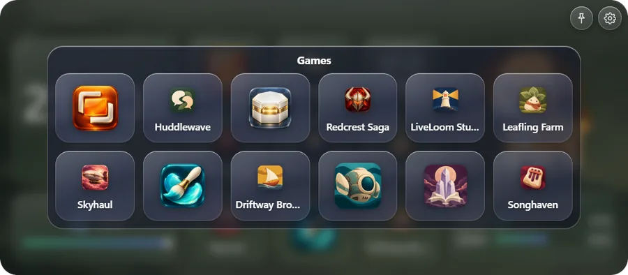
You can also drag and drop files and folders onto a widget.
Edit mode → "+ Add item"
Drag in edit mode. Live tiles and pets can grow up to 2 × 2.
Tiles that keep updating. Sizes from 1 × 1 to 2 × 2.
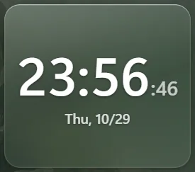
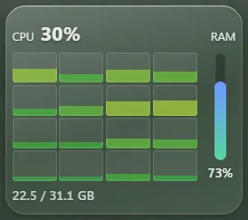
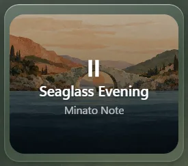
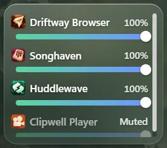
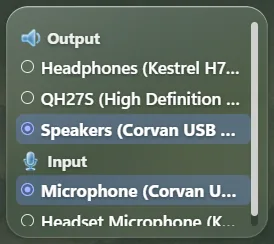
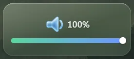
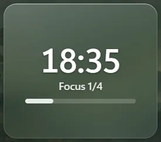
A pet lives in a tile and changes what it does to match your PC.

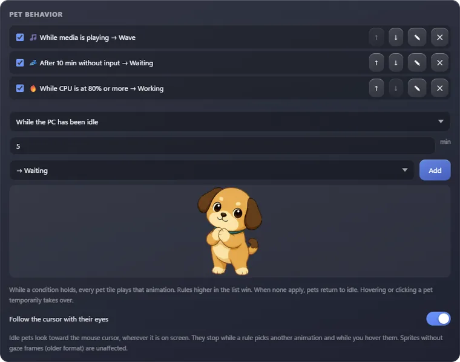
Two pets come included. They react when you hover them.
Change what they do when you're away, when music plays, when CPU is high, or while OBS streams.
Settings → "Pet behavior"
Use your own pets, or ones from the Workshop.
Save every widget as a whole and switch between them.
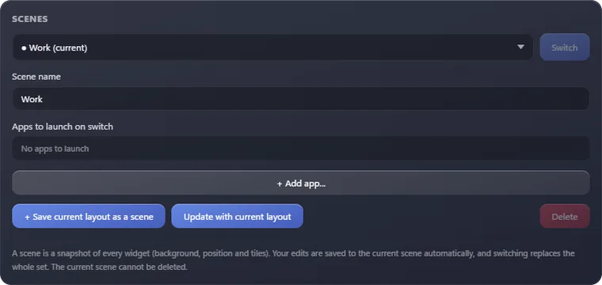
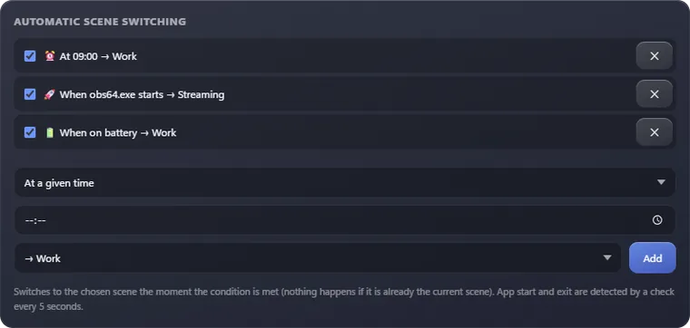
Keep separate setups for work, streaming and gaming. Launch apps when you switch.
Settings → "Scenes"
Switch at a set time, when an app starts or exits, or when power changes.
Settings → "Automatic scene switching"
Open a search box with one key, find things by name, and run them.
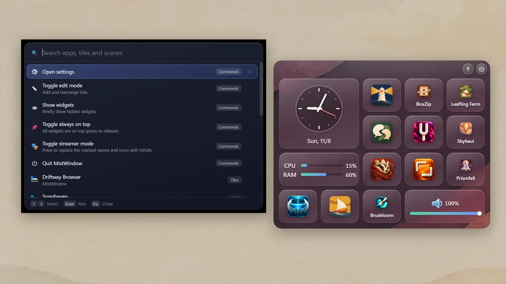
Find tiles, apps, games and scenes in one place. Star favorites to keep them on top.
Ctrl + Shift + Space (can be changed)
Control OBS Studio from tiles.
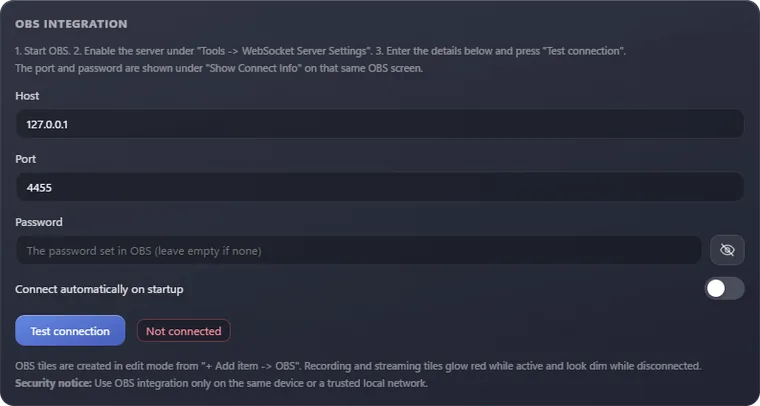
Switch scenes, record, stream, pause, save replays, virtual camera, mute. Active tiles glow red.
Connects to OBS's WebSocket server.
Settings → "OBS integration"
Masks tile names, app names in the mixer, song titles and file paths. Can turn on by itself while OBS streams.
Tray / right-click → "Streamer mode"
Subscribed items show up in your lists. Publish your own from inside the app.
Settings → "Steam Workshop"
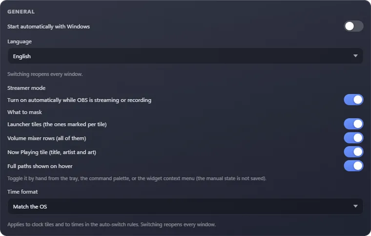
Launches when Windows starts.
日本語, English, 简体中文, 繁體中文, 한국어, Русский.
12-hour or 24-hour.
Shows you around the first time you launch.
Try MistWindow for free before release.
| Full version | Playtest | |
|---|---|---|
| Features above | All | Those labeled "In the Playtest" |
| Settings | Kept separately for the Playtest and the full version | |
In development. No dates yet, and details may change.
Design how tiles look inside the app and share it on the Workshop.